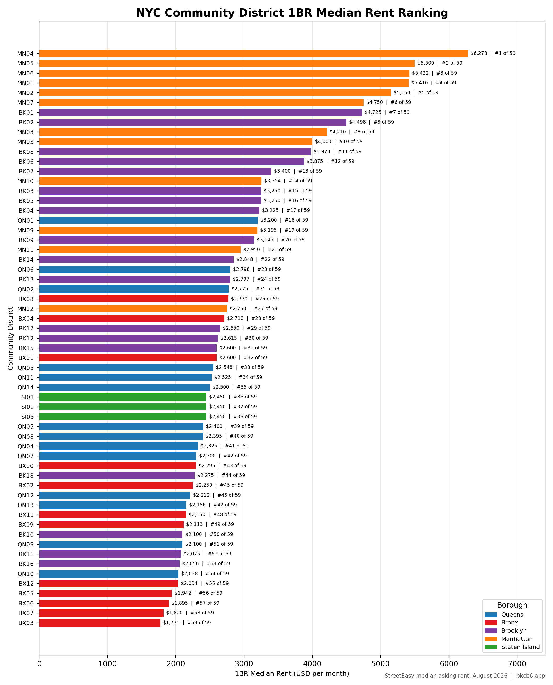

New York City's median household income was $79,480 in 2023. That number tells you almost nothing about how most New Yorkers live. The city contains the wealthiest community districts in the United States and some of the poorest. Greenwich Village and SoHo (MN2) had a median income of roughly $250,000. Belmont and East Tremont (BX6) ranks last among all 59 community districts citywide. The gap between those two districts is not a policy abstraction — it is the daily reality of housing, health, education, and access that defines life in the city differently depending on your zip code.
The poverty rate citywide was 18.2% in 2023. In Brownsville (BK16), it was 32.4%. In Mott Haven and Melrose (BX1), Hunts Point (BX2), and Highbridge and Concourse (BX4), poverty rates are among the highest in the country. Meanwhile, in CB6, the Upper East Side, or the Financial District, poverty rates sit in the single digits. This is one city managing two very different sets of economic conditions within the same municipal budget, the same agency structures, and the same community board system.
Citywide median gross rent was $1,590 in 2023 — but that median masks extreme variation. CB6 had a median rent of $2,780. Brownsville had $1,160. The absolute rent numbers diverge, but the rent burden numbers converge in a way that's worse: in lower-income districts, renters spend a far higher share of income on housing despite lower rents. In Fordham and University Heights (BX5), 37.7% of renters were severely rent burdened — spending more than half their income on rent. Severely rent burdened means one unexpected expense away from eviction. It means choosing between rent, food, and medication. Citywide, that condition affects hundreds of thousands of households.
The rental vacancy rate across the city was effectively at zero as of the most recent measurement — under 3% in most boroughs. A functioning rental market requires roughly 5% vacancy to give renters meaningful choice. Below that threshold, landlords hold the leverage, rents rise, and tenants have nowhere to go. New York has been operating well below that threshold for years.
New York City added significant housing across all five boroughs between 2010 and 2024 — over 300,000 units across Brooklyn, Manhattan, Queens, the Bronx, and Staten Island combined. The distribution of that production by income target is the problem. Brooklyn's new production was 70% market rate. Manhattan's was even higher. The Bronx, which has the greatest affordability need, saw the highest share of income-targeted production — but the total volume was lower than in wealthier boroughs, and the need is far greater.
DOB issued permits for tens of thousands of new residential units in 2024 across the city. But permits and certificates of occupancy are not the same as affordable housing. A market-rate unit in a high-income district does not relieve pressure on a low-income renter in a different district. The city needs more housing, and it needs housing that lower-income residents can actually afford, in the places where they already live and work.
There are 59 community board districts across the five boroughs. Each has a community board — an advisory body of appointed volunteers that weighs in on land use, budgets, and local services. They are not the same place. They don't have the same income, the same rent levels, the same housing stock, or the same capacity to absorb change. The data across this site tries to make that visible: not just the aggregate, but the specific conditions in each district, and the contrast between districts that share a borough but not much else.

Source: StreetEasy & NYC Open Data
Median Rent by Community Board — NYC
NYC Traffic Crash Data
crashcount.nyc ↗2025 Election Results by Community Board — NYC